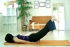

ただ、家人が言うには、座っている姿勢が猫背なのは相変わらずだけど、昔と比べると曲がっているのが背中の上のほうになってきたという。
それと関係あるのかどうかわからないが、体の裏というかバック、dark side of the body？側が、パワー柔軟性ともに足りないかなと思えてきた。なんとなく腰が張る感じも多いし。
それはともかく、雑誌を見ていたら、簡単なヨガの紹介で「バッタのポーズ」ってのの解説が出ていた。
をー、これしんどそうじゃん！
やってみたらなかなかよさそう。 これはゆっくり呼吸しながらしばらくやるのがいいのかね。
研究してみよう。
写真は以下のブログからでした。
http://t-konomi.cocolog-nifty.com/therapy/2007/01/post_cfa6.html